ナイアガラ観光ツアーに参加したけれど、、、。
ワインツアーがすっかり気に入った私とＪ次郎。
共同購入サイトのbuytopiaで、ワイナリーにも行くトロント発着のナイアガラの１日観光ツアーがあがっているのをみつけ、意気揚々と購入した。
このツアーはトロントのダウンタウンならホテルまで迎えにきてくれるので、ホテルも併設しているコンドに住んでいる私達には都合が良かった。
ところが、予約時になって、別のホテルの○○まで来いとか、それなら○○の交差点まで来てくれないかとか、話が違う。もちろん約束どおり住んでいる住所のホテルまで迎えに来てもらうことに。さらに、料金には消費税が含まれていないので、当日追加で払うようにいわれる。やはりbuytopiaを通して買った、気に入って２回も利用している Niagara Fun Tours ではそんなことなかったのに。なんだか違和感を感じ始めたが、気をとりなおし日にちを予約した。
８月のある晴れた日、言われていた時間より２０分くらい遅れて、リムジンが到着。リムジンがくるとは知らなかったので驚いた。

車内にはすでに他のお客さんが乗っていた。オランダからきたという、それはそれは背の高い夫婦と、まだ１１歳だけれど１５８センチの私よりはるかに背の高い娘さん。
巨人のような彼らと比べると、小柄な私達はまるで小人のよう。
巨人と小人を乗せてリムジンツアーはスタート。
リムジンの中は、よくみると内装がはげていたりして、中古で購入したんだろうなあ、とかつい余計なことを考えてしまう私。車内に備え付けられた、べっとりとついた指紋が目立つシャンパングラスをみていると、なんだか違和感を感じることこのうえなかった。
運転手兼ツアーガイドの挨拶。これからナイアガラに向かいます。とのアナウンス。
高速からは湖畔に沿って建設中のコンドの多さに度肝を抜かれる。
それから３０分後、着いたのはナイアガラとは反対方向の、空港近くのホテル。しかもなぜか遠回りなルートを通って。
アメリカから来たという恰幅の良いご夫婦を乗せる。旦那さんは運転手の隣の助手席に座り、奥さんは私の隣。私の隣にはＪ次郎。私は真ん中の、席とはいない席で、これなら普通のバスのほうが快適。とほほ。しかもエアコンがなぜか途中で途切れるので、ツアーの間中、窓をあけたり閉めたりしなければならず忙しかった。オランダのご主人も、その長い足に幾度となくシャンパングラスがあたってグラスが落ちてしまい、イライラしている様子。
そうしてやっと今度は本当にナイアガラへ。
最初はワイナリー。
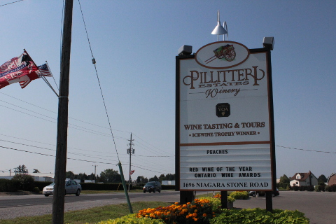
白、赤の試飲は無料。
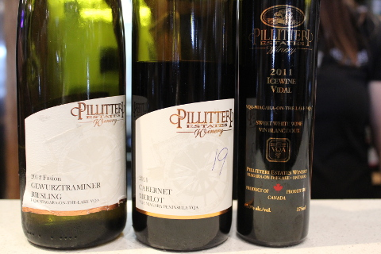
アイスワインは追加料金とのことだったが、それでもいいからとお願いして飲んだ後になって、やっぱりお金いらないわ、と言ってくれた親切なお姉さん。やっぱりアイスワインおいしい♪
店先には旬の果物が並ぶ。
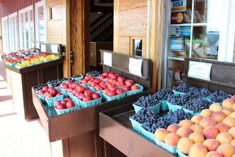
↓食べたことなかった小粒のブドウが売っていたので買ってみた。１箱で２．５ドル。
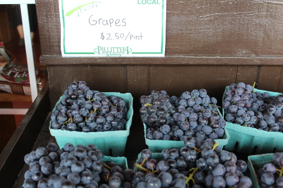
皮が厚めで、甘酸っぱい。
次はナイアガラオンザレイクの歴史的な街で自由行動。
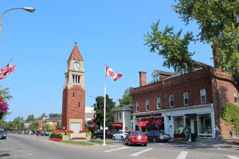
風光明媚な素敵な街だった。
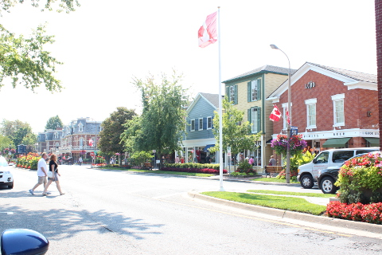
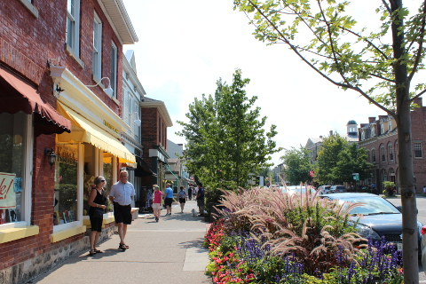
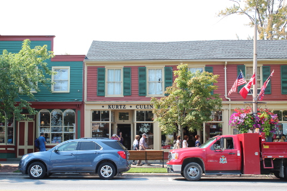
Ｊ次郎が見つけるやいなや素早く入って行ったのは、ワインを売る店。
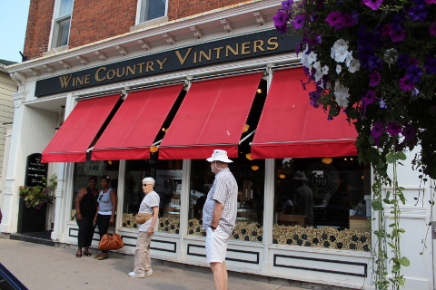
テイスティングができるのだ。最近はまっているアイスワインの試飲をすることに。
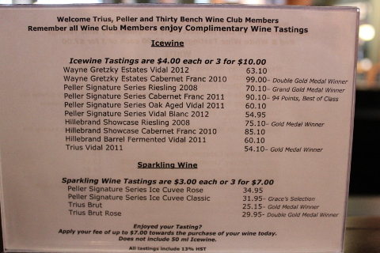
単純に、値段の高いのを３種類試すことにした。
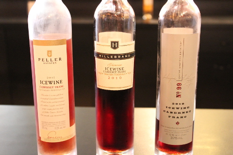
一番右側のが一番高くて、１本（３７５ｍｌ）で９９ドル。
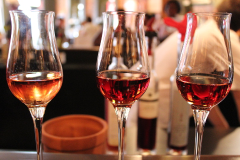
感動するおいしさ。３杯で１０ドル。ここまで高いと、ここで試飲するほうが１本買うより安い気がするのだけれど、どうなのだろうか。
さらにすごいのは、試飲のお金を払ったときのレシートに、このレシートでどれでもワインが７ドル安く買えます、とあるではないか。
この時点で集合時間が迫っていたので、慌てて手ごろな値段のワインを選ぶ。前回のワインツアーで、ワイナリーでは試飲したものを買うべき、と教訓にしたはずなのだが、ここはワイナリーではなくショップだし、まあいいだろう。
↓ロゼ好きなＪ次郎のために選んだ。

後日家で開けたがおいしかった。
それにしても楽しい時間はあっという間に過ぎてしまう。ここではもっと過ごしたかった。是非また来てのんびりぶらぶらしたいところ。
たぶん空港近くのホテルに行ったから時間がおしていたせいもあったんだろうな、きっと。
またリムジンに乗り、観光開始。
着いたのはqueenston heights。眺めの良いところで写真タイム。
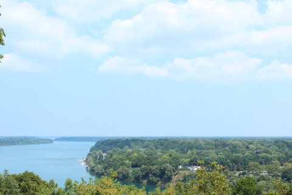
次は水力発電のダム、とのことだったが、停まることなく、スピードを落とすこともせず素通り。
ガイドの解説も、一言、これは有名な水力発電のダムです。だけ。
この運転手兼ガイドさん、写真撮りましょうか？と声をかけたりしてくれていい人なんだろうけれど、ツアーの説明文にはっきり記載されてた、ガイドとしてのライセンス持っているかどうか疑問。ガイドのわりには、私でも言えますけど？くらいのことしか言わないのだ。これはとても高い家です、とか、この自転車コースは人気です、とか。そこで、トロント出身のＪ次郎がもっと詳しく説明を始める始末。
↓その後はフローラルクロック。写真タイム。
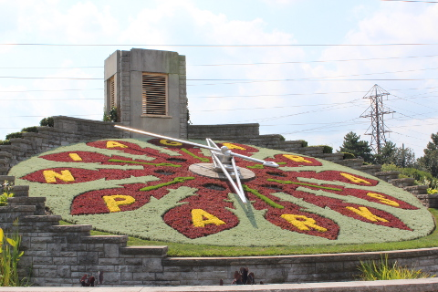
次も写真タイム。ケーブルカーの眺め。
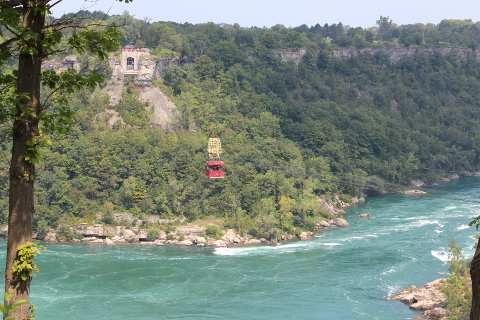
最後はナイアガラフォールズでの自由時間。
皆と別れ、ここで滝を見ながら持参したお弁当を食べピクニック。お腹いっぱいになった後はごろりと横になり、子供達のシャボン玉攻撃に必死に抵抗する犬のほえるのなどが聞えてくるなか束の間のお昼ね。
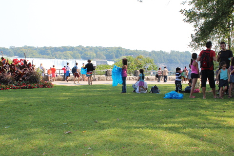
すっかりリフレッシュして、リムジンに戻った私達に、オランダのご主人の質問。
「どこ行ってたの？何故一緒に来なかったの？僕達ガイドに連れられて霧の乙女号に乗って滝の裏側に行ったんだよ。もちろんガイドが払って。ツアー内容にしっかり記載されてたからね。それでも僕ら何度も確認してやっと連れて行ってくれたんだ。」
どうやらガイドは意図的に私たちには声をかけず、私達以外のひとを連れて、霧の乙女号に引率したらしい。
私の感じていた数々の違和感が絶対のものになった。
後でガイドに聞いてみると、私達は違う値段を払っているので、私達には声をかけるなと、ボスに言われたことをあっさりと教えてくれた。
ナイアガラから空港近くのホテルに戻る途中、アメリカから来たご婦人は、
「泊っていたホテルで見つけたパンフレットをみてとても魅力的な値段のこのツアーを予約したところ、そのパンフレットの値段は改定前のもので今はその値段ではやっていないと言われたのよ。」
と教えてくれた。
ああ、もう、そんなの意図的に決まっている。ハワイと違って、トロントってリピーターが多いわけではないだろうから、観光客相手に好き勝手やるんだろうな。
さらに、私は車内に置かれているパンフレットリーフを発見した。
私達は５０％オフのディスカウントで買っていたが、もともとの値段は１２０ドル。霧の乙女号なし。
そのリーフには、今回のツアー内容とまったく同じものに加えて、霧の乙女号が加わったツアーが大人ひとり１０９ドルとあるではないか。
霧の乙女号は普通に払って２０ドルくらいする。
よって、１０９－２０＝８９ドル、本来は８９ドル相当のツアーなのだ。これでは５０％オフということで支払った５９ドルは、５０％オフではなかったということになる。
その後トロントのダウンタウンにもどり、私達のコンドまで後５分、オランダ人一家のホテルまで後２分のところでなぜかガソリンスタンドへ。
何故私達をおろした後に行かないのか、すこぶる疑問である。オランダ人のお父さんもいらいらして怒り心頭。愚痴っていた。
最後に私とＪ次郎だけになり、ことの次第をドライバーに説明する。
ドライバーは、そのリーフが今回のツアーだということを認めたが、まだカナダに来て間もないのか、共同購入サイトの趣旨をよく理解できていない様子だった。リムジンだから高いんじゃないか、とかいうが、リムジンを指定したのは私達ではないし、詰め込まれて窮屈でバスのほうが良かった。車を降りるときに、予約時に言われた消費税を払うように言われる。これであと二人分１５ドルも余計にとられるなんて冗談ではない。払わないことで文句があるなら正々堂々と直接請求しにくるようにと、彼のボスに伝えるように言い、請求されたタックスの支払いを拒否したところ、応じてくれた。もちろんその後その会社からは何の連絡も来なかった。
家に帰り、ネットでこのツアー会社のことを調べてみると、やはり怪しい。
まず、購入したbuytopiaの画面には、ツアー会社の名前もウエブサイトも載っていないのだ。
でも、私は車内に残されたパンフレットリーフを持って帰ってきた。そこには、shawtours.comとウエブサイトが載っている。さらに、shawtoursは、Best Toronto & Limousines Incによって運営されている、とあるので、検索してみると、、、。
たどり着いた先では、私達が参加したツアーの内容に加えて、霧の乙女号がセットになったものを、車のなかで発見してパンフレットリーフよりさらに安い、７９ドルで販売していた！！！
私達は５０％オフのディスカウントということで５９ドル払っていたが、この５９ドルには２０ドルする霧の乙女号は含まれていないので、つまりのこと、わたしたちは５９ドル相当のツアーに、５０％オフと騙されて５９ドル払っていたのだ。
とほほ。
この日は満月だった。ああ、こういう不誠実なツアー会社を月に代ってお仕置きできたらどんなにいいだろう、とその夜丸い月を眺めながらおもった。
が、しかし、お仕置きはできないけれど、かといって、このままでは終わらせません。
＞＞＞buytopia（公式サイト）
↓↓↓関連過去記事↓↓↓